Kami, Kochi: things to do, food and stays
Kami · Kochi
Kami
Highlighted on the Kochi map.

Stay
湖畔遊
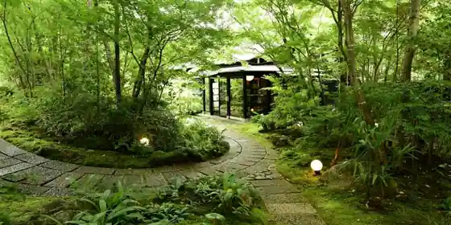
Kohan Yu
Inn in Kahoku, Kami with open-air baths and lakeside location.
allbeans KOCHI
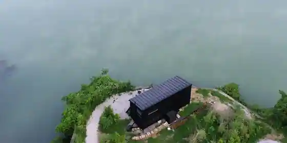
allbeans KOCHI
HIJIRIYA 聖舎
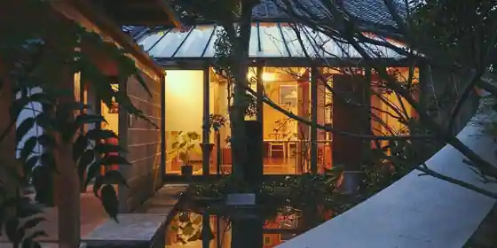
HIJIRIYA Hijiri Sha
Inn in Tosayamada, Kami with one group per day and a renovated traditional house.
物部川のほとりの温泉宿 夢の温泉
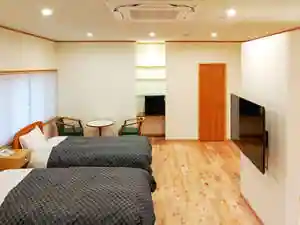
Mononobe Kawa Nohotorino Onsen Yado Yume No Onsen
Inn at Kawanohotorino Onsen in Tosayamada, Kami.
癒しの湯宿 龍河温泉
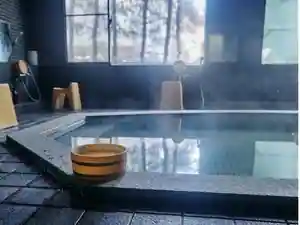
Iyashi No Yuyado Ryuga Onsen
Inn at Ryuga Onsen in Tosayamada, Kami.
ほっと平山
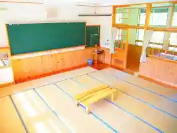
Hotto Hirayama
ザ・シックスダイアリーかほくホテルアンドリゾート
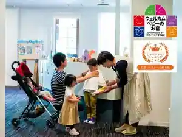
Za Shikkusudaiari Kahoku Hotel Ando Resort
Resort hotel in Kahoku, Kami with family-friendly stays.
Dining
手打ち蕎麦 石州
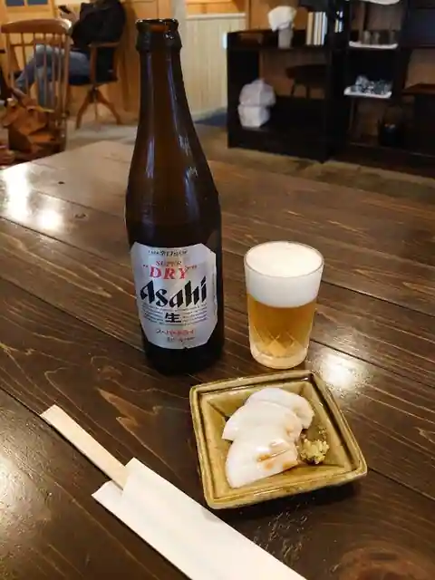
Teuchi Chi Soba Sekishu
TOSACO TAP STAND
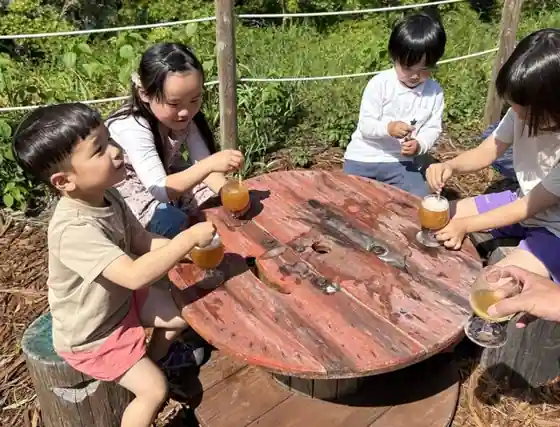
TOSACO TAP STAND
さかえ
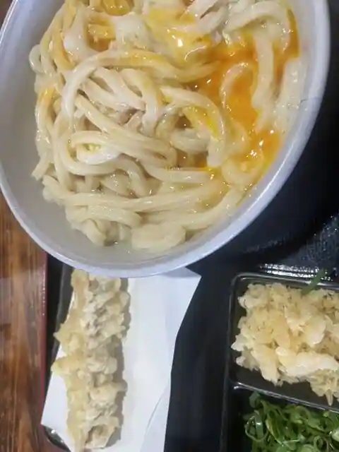
Sakae
大門
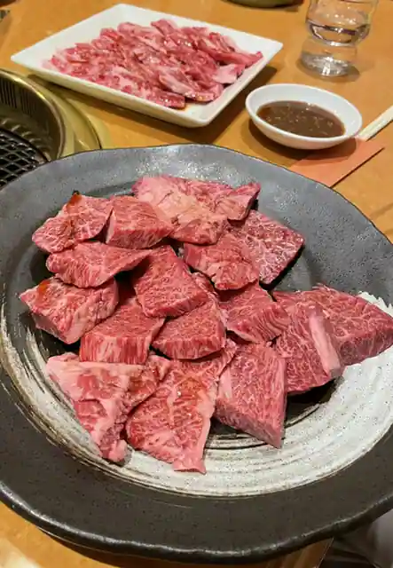
Daimon
ラフディップ
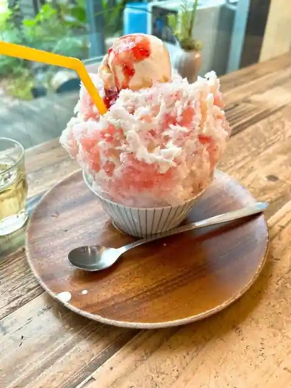
Rafudippu
韮生の里 美良布直販店
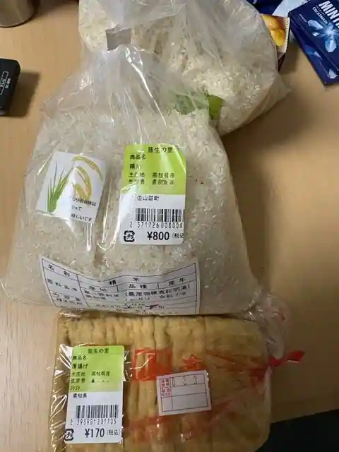
Nira Uno Sato Miyoshi Nuno Chokuhan
いのなかのかわず
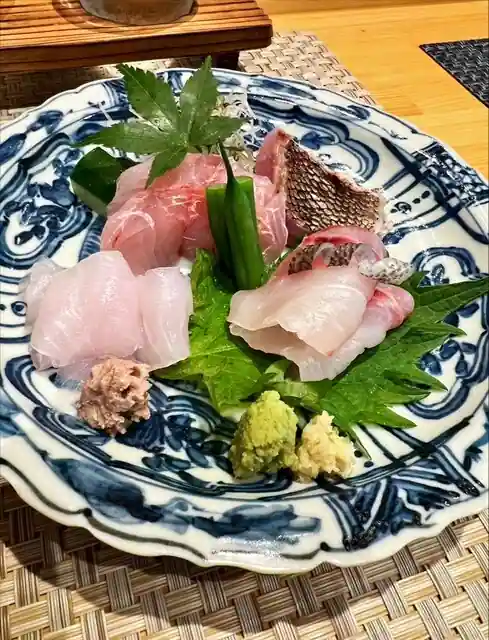
Inonakanokawazu
まるしん
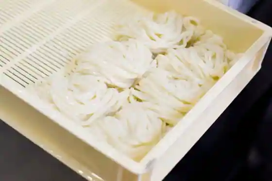
Marushin
コンビニエンス おかばやし 香北店
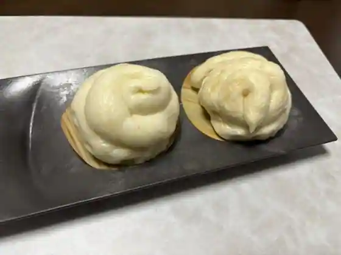
Konbiniensu Okabayashi Kahoku
龍河温泉
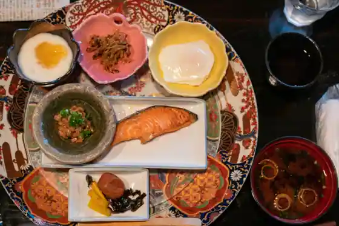
Ryuga Onsen
BAKE SHOP ヒジリ
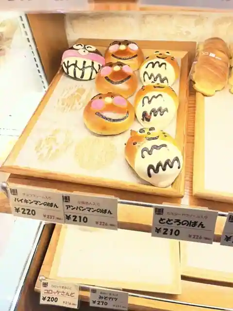
BAKE SHOP Hijiri
平家の茶屋
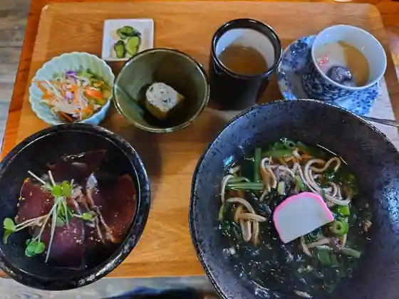
Heike No Chaya
マリソル
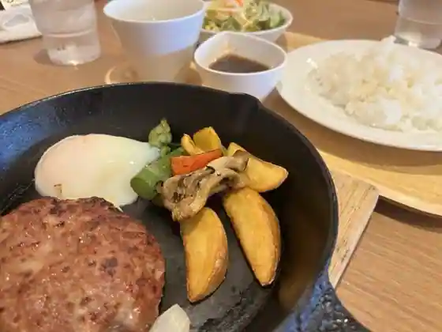
Marisoru
キッチン 韮生の里
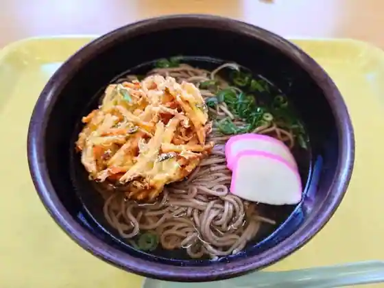
Kitchen Nira Uno Sato
ジャスミン
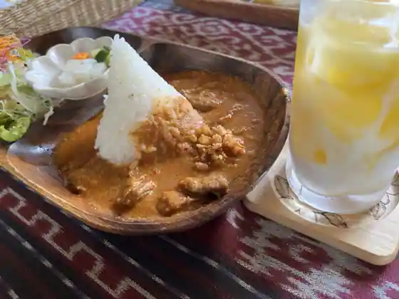
Jasumin
ロイヤルニボシコーヒースタンド
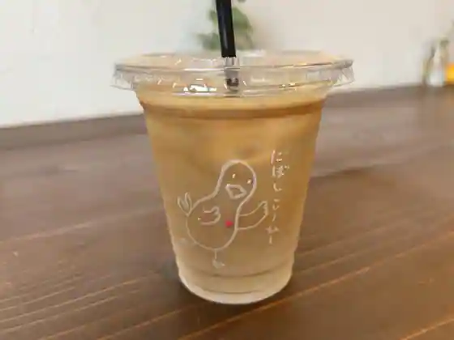
Roiyaruniboshi Coffee Sutando
リトルガーデン庭園喫茶
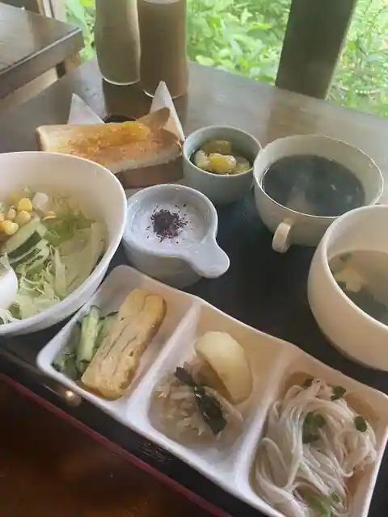
Ritoru Garden Teien Kissa
久五手打うどん
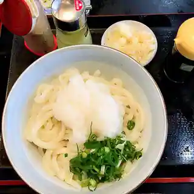
Kyu Go Teuchi Udon
ヒビヤ レコーズ
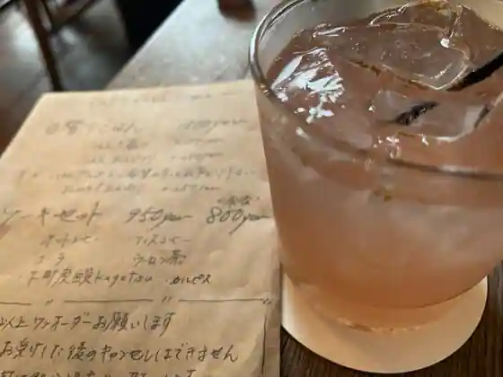
Hibiya Rekozu
さくらベーカリー
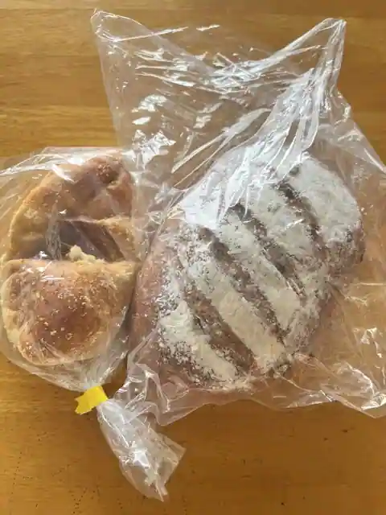
Sakura Bakery
おすそわけ食堂 まど
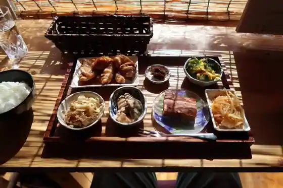
Osusowake Shokudo Mado
土佐山田ゴルフ倶楽部 レストラン
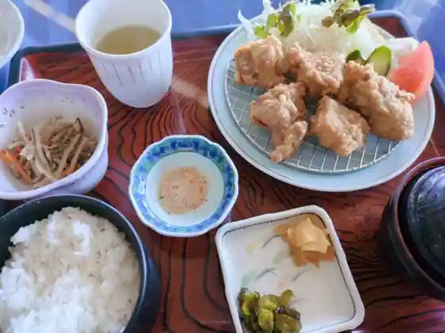
Tosayamada Gorufu Kurabu Restaurant
Sights
Kami Ritsu Yanasetakashi Memorial Museum
Ryuga Hora

Tosayamada Eki

Okawa Ue Miyoshi Nuno Shrine

Befu Kyo

Shigeto Eki